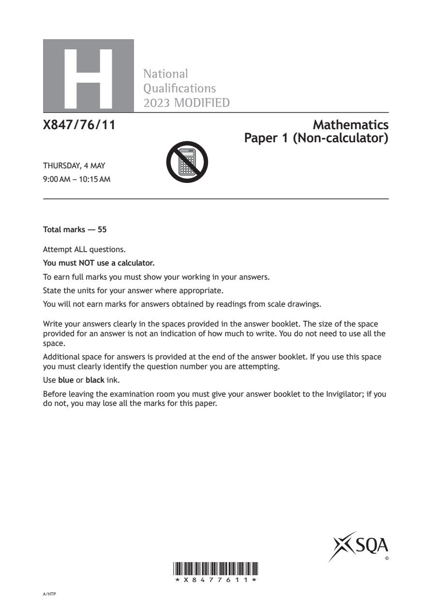
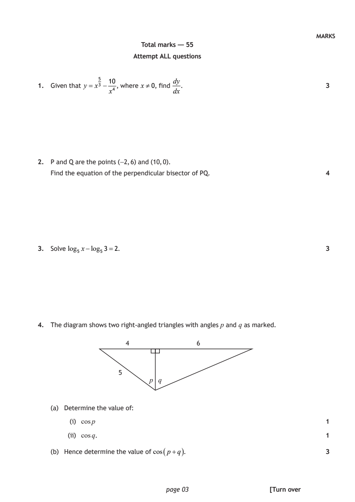
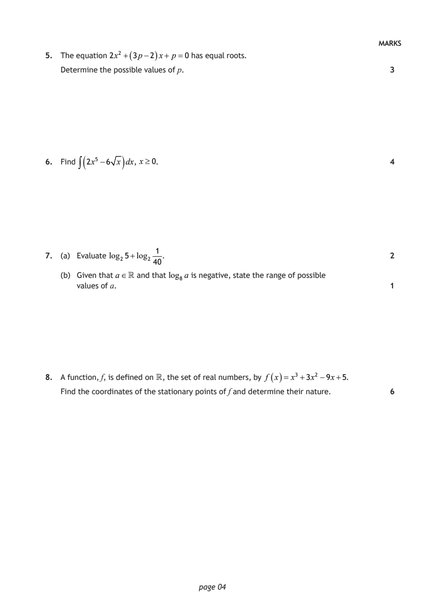
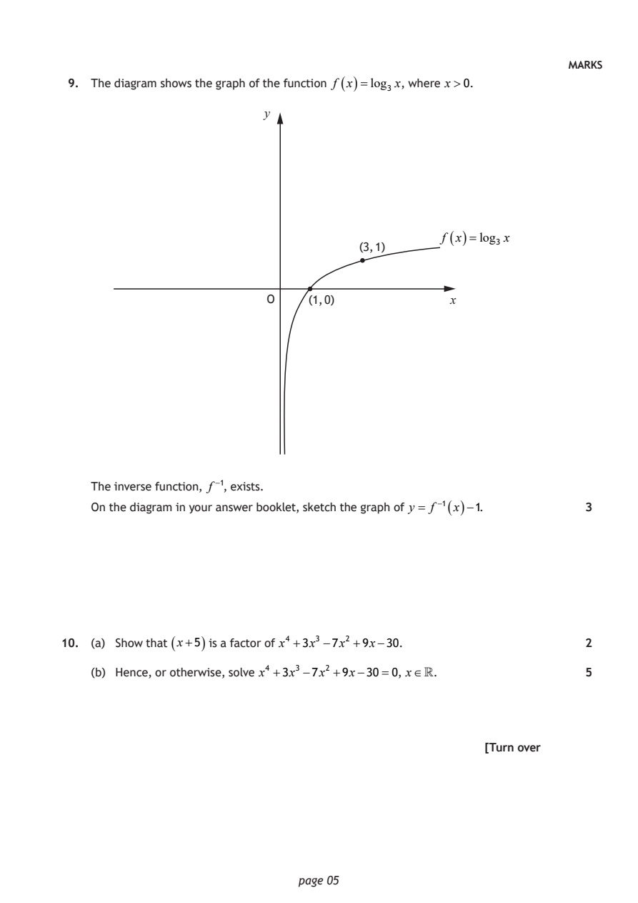
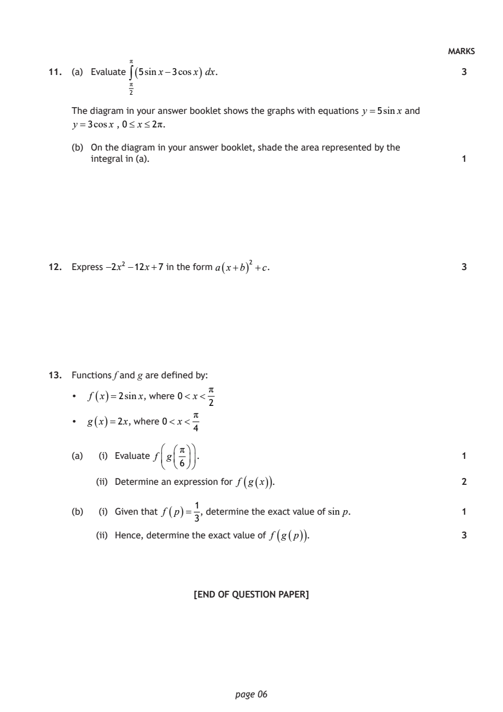

2023 Higher Mathematics - Paper 1 questions
Source: Scottish Qualifications Authority (SQA) / Qualifications Scotland. This is a StemInteract HTML companion, not an official HTML edition. Selectable text is supplied alongside original page images. Use the images or original PDF for equations, powers, fractions, vector notation, tables and diagrams; text extraction cannot fully preserve mathematical layout.
Jump to a question
PDF page 1

Selectable page text
H
National
Qualications
2023 MODIFIED
X847/76/11 Mathematics
Paper 1 (Non-calculator)
THURSDAY, 4 MAY
9:00 AM – 10:15 AM
Total marks — 55
Attempt ALL questions.
You must NOT use a calculator.
To earn full marks you must show your working in your answers.
State the units for your answer where appropriate.
You will not earn marks for answers obtained by readings from scale drawings.
Write your answers clearly in the spaces provided in the answer booklet. The size of the space
provided for an answer is not an indication of how much to write. You do not need to use all the
space.
Additional space for answers is provided at the end of the answer booklet. If you use this space
you must clearly identify the question number you are attempting.
Use blue or black ink.
Before leaving the examination room you must give your answer booklet to the Invigilator; if you
do not, you may lose all the marks for this paper.
©
*X8477611*
A/HTPPDF page 2

Selectable page text
FORMULAE LIST
Circle
The equation x² + y²+ 2gx + 2fy + c=0 represents a circle centre (−g, −f ) and radius g² + f ² −c.
The equation (x−a)² + (y−b)² =r² represents a circle centre (a, b) and radius r.
Scalar product a.b= a b cos θ, where θ is the angle between a and b
a₁ b₁
or a.b=a₁b₁+a₂b₂ +a₃b₃ where a= a₂ and b= b₂ .
a₃ b₃
Trigonometric formulae sin(A±B)=sinA cosB ± cos AsinB
cos(A±B)=cosAcosB ∓ sinAsinB
sin2A =2sinAcosA
cos2A=cos²A−sin²A
=2cos²A−1
=1−2 sin²A
Table of standard derivatives
f(x) f′(x)
sinax acosax
cosax −asinax
Table of standard integrals
f(x) ∫ f(x)dx
1
sinax − cosax + c
a
1
cosax sinax + c
a
page 02PDF page 3
Paper 1, Question 1Paper 1, Question 2Paper 1, Question 3Paper 1, Question 4
Selectable page text
MARKS
Total marks — 55
Attempt ALL questions
10 dy
1. Given that y = x⁵³ − , where x≠0, find . 3
x⁴ dx
2. P and Q are the points (−2, 6) and (10, 0).
Find the equation of the perpendicular bisector of PQ. 4
3. Solve log₅ x−log₅3=2. 3
4. The diagram shows two right‑angled triangles with angles p and q as marked.
4 6
5
p q
(a) Determine the value of:
(i) cos p 1
(ii) cos q. 1
(b) Hence determine the value of cos ( p+q ) . 3
page 03 [Turn overPDF page 4
Paper 1, Question 5Paper 1, Question 6Paper 1, Question 7Paper 1, Question 8
Selectable page text
MARKS
5. The equation 2x² +( 3p−2 ) x+ p =0 has equal roots.
Determine the possible values of p. 3
( )
6. Find ∫ 2x⁵ −6 x dx, x≥0. 4
1
7. (a) Evaluate log₂5+log₂ . 2
40
(b) Given that a∈ and that log₈a is negative, state the range of possible
values of a. 1
8. A function, f, is defined on , the set of real numbers, by f ( x )= x³ +3x² −9x+5.
Find the coordinates of the stationary points of f and determine their nature. 6
page 04PDF page 5
Paper 1, Question 9Paper 1, Question 10
Selectable page text
MARKS
9. The diagram shows the graph of the function f ( x )=log₃ x, where x>0.
y
f
(
x
)=log₃
x
(3, 1)
O (1, 0) x
The inverse function, f ⁻¹, exists.
On the diagram in your answer booklet, sketch the graph of y = f ⁻¹ ( x )−1. 3
10. (a) Show that ( x+5 ) is a factor of x⁴ +3x³ −7x² +9x−30. 2
(b) Hence, or otherwise, solve x⁴ +3x³ −7x² +9x−30=0, x∈. 5
[Turn over
page 05PDF page 6
Paper 1, Question 11Paper 1, Question 12Paper 1, Question 13
Selectable page text
MARKS
π
11. (a) Evaluate ∫( 5sinx−3cosx ) dx. 3
π
2
The diagram in your answer booklet shows the graphs with equations y =5sinx and
y =3cosx , 0≤ x≤2π.
(b) On the diagram in your answer booklet, shade the area represented by the
integral in (a). 1
12. Express −2x² −12x+7 in the form a ( x+b ) ² +c. 3
13. Functions f and g are defined by:
π
• f ( x )=2sinx, where 0< x<
2
π
• g ( x )=2x, where 0< x<
4
π
(a) (i) Evaluate f g . 1
6
(ii) Determine an expression for f ( g ( x )) . 2
1
(b) (i) Given that f
(
p
)=
, determine the exact value of sin p. 1
3
(ii) Hence, determine the exact value of f ( g ( p )) . 3
[END OF QUESTION PAPER]
page 06PDF page 7

Selectable page text
[BLANK PAGE]
DO NOT WRITE ON THIS PAGE
page 07PDF page 8

Selectable page text
[BLANK PAGE]
DO NOT WRITE ON THIS PAGE
page 08